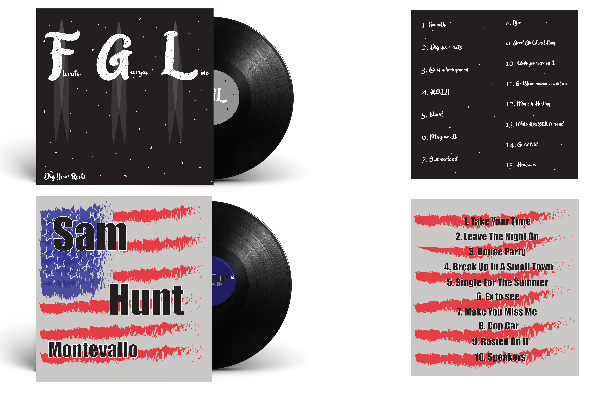
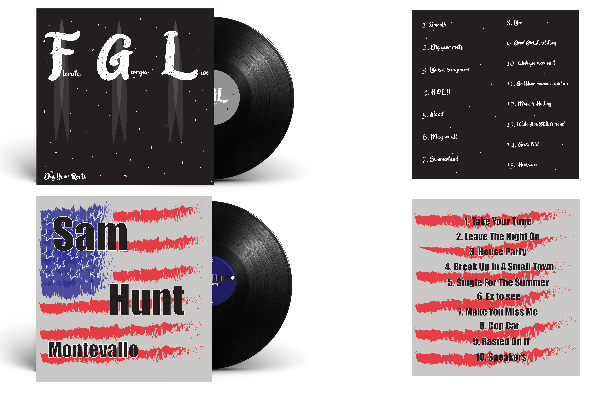

About Me
Home
Sophomore Year
This project is based off the book The Birds By Alred Hitchock. We had to make three different book covers and I wanted to incorporate the bird in all three covers becuase that is the main subject. I went for an overall simple desgin becuase I wanted the point to get across right away.
 For this project we had to come up with two logos that had to incorporate a object or a blend of two different letters. I decided to do both ways and came up with both logos on my own.
For this project we had to come up with two logos that had to incorporate a object or a blend of two different letters. I decided to do both ways and came up with both logos on my own.
 For the last project we had to come up with two differnt album covers. I chose Sam Hunt and Florida Geogia Line becuase they are my favorite country signers. I think both of the album covers really fit the style of the artist and I like how they came out on the disc.

For the last project we had to come up with two differnt album covers. I chose Sam Hunt and Florida Geogia Line becuase they are my favorite country signers. I think both of the album covers really fit the style of the artist and I like how they came out on the disc.
